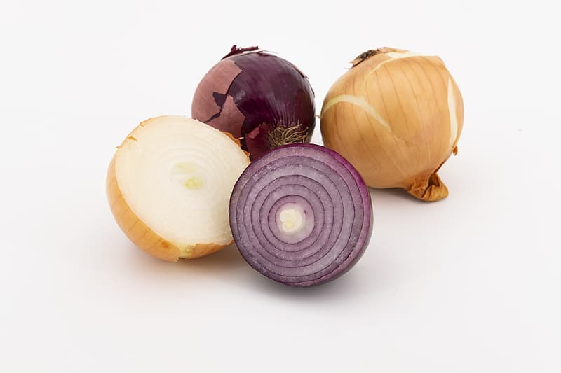

Week 1 Notes¶
Note
Keep an eye weekly pages as they might be updated throughout the week.
Lecture Materials¶
Lecture Notes¶
Recursion¶
Note
This is a loosely adapted version of the recursion lecture. I say quite a bit more in the actual lecture, so I encourage you to watch. However, consider this your companion to the video and reference.
In this lecture we are going to talk about recursion.

Let’s start with an example. Take the onion, as you might imagine every onion develops differently. They are different sizes and they have different amounts of outer and inner layers. So each time we peel a new onion, the work effort to remove all of the layers down to the core will be different. If we think of the action required to remove one outer layer of an onion as a single operation, then one onion might require 10 peel operations. Another might require 15. And another might only need 5.
So given a basket of onions to peel, as you might imagine, if we were to peel each onion by hand, that would be a lot of work!
But, perhaps we can automate the work to save us some time, effort, and the inevitable onion tears…
So let’s imagine that the onion is a Python object that we can write some code to peel.
Note
Don’t worry too much about the Onion object. You can take a look at by expanding the following section, but for now, just assume that the Onion object has a random number of layers, can remove layers one at a time, and can report wether or not it still has layers.
import random
class Onion:
layers = 0
def __init__(self):
self.layers = random.randrange(5, 15)
def removelayer(self):
if self.layers > 0:
self.layers -= 1
def is_layer(self) -> bool:
return self.layers > 0
The countlayers() function looks like a pretty good way to go about peeling the layers off of our onion object, right? In fact, it is! Although the onion is not the perfect metaphor for recursive properties, it provides us with a constrained conceptual model that we can build upon.
def countlayers():
onions = Onion(), Onion(), Onion()
layers = 0
for onion in onions:
while onion.is_layer():
onion.removelayer()
layers += 1
print(layers)
Okay, so let’s talk about what we mean when we say recursive.
In programming languages, a recursive function call means that you call a function from within that same function. So you can see what that looks like in this pseudo code here:
def recurse():
recurse() # <- Recursive function call
def main():
recurse() # <- Normal function call
Take a minute and think about why the pseudo code here is problematic.
Imagine what would happen if we were to run the main function right now?
We would actually receive a RecursionError exception. Effectively what we did was put the program into an infinite loop! That’s bad. So when we write recursive functions, we need to take care that our code contains a terminal condition, something to ensure that at some point the recursive call will end.
Let’s take a look at the onion peeler again, this time we will make some modifications to apply recursive principles rather than nested loops.
def peel(onion, layer_count) -> int:
onion.removelayer()
if onion.is_layer():
return peel(onion, layer_count + 1) # recursive call
else:
return layer_count
def countlayers_recursively():
onions = Onion(), Onion(), Onion()
layers = 0
for onion in onions:
layers += peel(onion, 0)
print(layers)
So the code we have written here, is probably not the best case for demonstrating the value of recursion, but I think by approaching it this way, internalizing the goal of using recursive logic is a little easier.
Fortunately, the onion is not a very complex structure, so the advantages of recursion are less apparent here. So let’s think of another metaphor that is complex.
How about a tree?

Slightly more complex, right? So let’s say you want to count the leaves on a tree…think about how you might do that without recursion. Each branch has the possibility to contain infinite branches with infinite leaves! Of course, a real tree is constrained by physical and environmental conditions, so there are some finite bounds, but a computational tree, given enough memory, is limitless.
Let’s take a more practical look using nested lists.
Note
sum functions adapted from Alex Thornton
def simple_sum(num_list: [int]) -> int:
total = 0
for n in num_list:
total += n
return total
print(simple_sum([1,2,3,4,5,6]))
def list_sum(num_list: [[int]]) -> int:
total = 0
for l in num_list:
for n in l:
total += n
return total
print(list_sum([[1],[2,3],[4,5,6]]))
def complex_sum(num_list: [int or [int]]) -> int:
total = 0
for obj in num_list:
if type(obj) == list:
for n in obj:
total += n
else:
total += obj # if not a list, must be integer
return total
print(complex_sum([1,2,[3,4],[5],6]))
Running each of these functions right now, is probably unnecessary. You can assume that each will return a sum of the integers passed as function parameter. But, feel free to take a minute to run each if you would like.
Rather, pay attention to the increasing complexity of each function as we increase the complexity of our list parameter. Notice how each parameter creates additional rules to take into account, and how each function requires additional logic to handle the complexity.
By the time we get to complex_sum, we are working with two nested levels and a single integer. But, like the tree with infinite branches and leaves, what happens when we need to add a third level of nested lists? How about a fourth level?
This is where recursion becomes truly invaluable. We can replace all three of the sum functions here and any additional functions required to support deeper nesting, with a single recursive function.
def recursive_sum(nested_list) -> int:
total = 0
for obj in nested_list:
if type(obj) == list:
total += recursive_sum(obj) # <- recursive call
else:
total += obj # if not a list, must be integer
return total
print(recursive_sum([1,2,3,4,5,6]))
print(recursive_sum([[1],[2,3],[4,5,6]]))
print(recursive_sum([1,2,[3,4],[5],6]))
Pretty cool, right?
Okay, one final thought. Guess what else is like a tree with branches or an infinitely nestable list (toggle to reveal the answer)?
The computer file system! (ahem, a1)